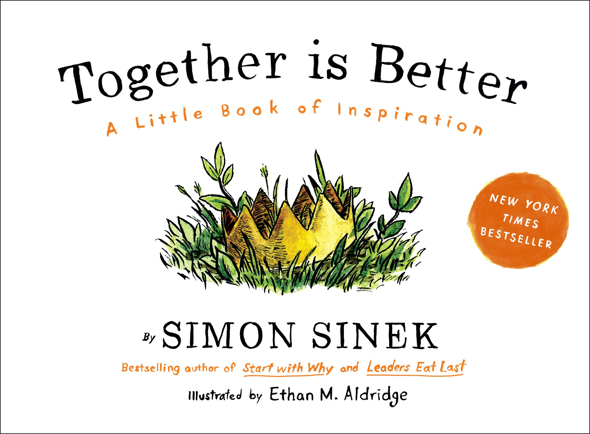

Past Episodes:
Know Your Why
Now Find Your Why picks up where Start With Why left off. It shows you how to apply Simon Sinek's powerful insights so that you can find more inspiration at work and in turn inspire those around you.
Infinte Game
The rules of an infinite game are changeable while infinite games have no defined endpoint. There are no winners or losers—only ahead and behind.
Leaders Eat Last
In his work with organizations around the world, Simon Sinek noticed that some teams trust each other so deeply that they would literally put their lives on the line for each other.
Together Is Better
Now this beautifully illustrated book will inspire more readers to ask for help, help others, and discover their own courage through a charming story about change